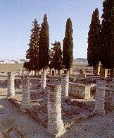
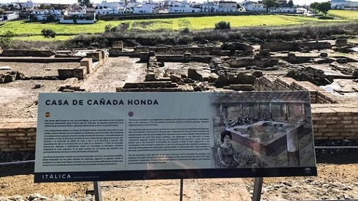

|
Estaba situada dentro del recinto de la última muralla.
|
La puerta esta orientada al este, flanqueada por dos
pilastras de ladrillo y a ambos lados tabernae que posteriormente fueron
tapiadas para ganar terreno a la casa.
La fachada sur también esta plagada
de tabernae y por unas escaleras de la calle se accede al traianeum.
Presenta tres puerta de entrada, cruzando el vestíbulo se accede al peristilo
por una triple puerta. Las columnas del peristilo conservan el estuco y parte de
la pintura. En el centro del peristilo se halla un doble estanque y en la zona
sur un lararium. En la galería opuesta se halla en triclinio y los
dormitorios. La casa se ha conservado bien y los muros tienen una altura
considerable que permite apreciar la decoración y la distribución de las
estancias. |
 |

El área incluye un 'stibadium' o lecho para
banquetes al aire libre, de los que sólo hay dos en España.
Abril de 2024, en esta domus se halla la
única perfumería romana de Hispania. Vendía ungüentarios de
vidrio.
Un proyecto arqueológico documenta la primera "boutique de
perfume" de la Península Ibérica, en uso hasta el siglo III. |